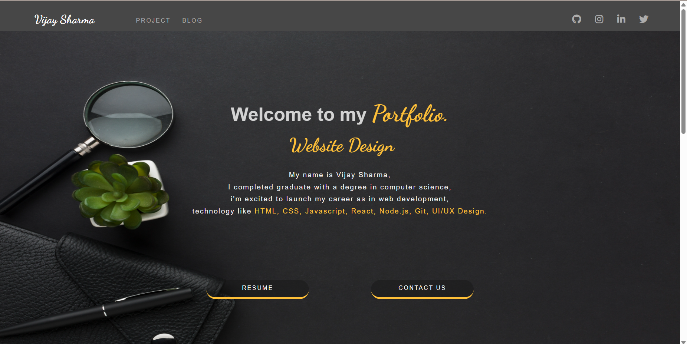

"Welcome to my personal portfolio website, built from scratch using the core technologies of the web: HTML,
CSS, and JavaScript. This project showcases my skills and experience as a web developer and designer, with a
focus on creating a visually appealing and interactive user experience.
HTML (Hypertext Markup Language) forms the
structural foundation of my website, providing a semantic and organized framework for my content.
CSS (Cascading Style Sheets) brings my website
to life with custom styling, layout, and visual effects, ensuring a responsive and engaging design that
adapts to various devices and screen sizes.
JavaScript adds dynamic functionality
and interactivity to my website, enabling features like animations, scrolling effects, and user-friendly
interfaces.
Through this project, I demonstrate my proficiency in these essential web development technologies and my
ability to craft a compelling online presence. Explore my website to learn more about my work, skills, and
experiences."
Visual Studio Code (VS Code) as my
Integrated Development Environment (IDE) for writing, debugging, and optimizing my code
With VS Code, I was able to leverage its powerful features such as syntax highlighting, code completion, and
version control to streamline my development process. The extensions I used, including Live Server and
Debugger for Chrome, allowed me to preview and test my website in real-time, ensuring a seamless user
experience.
Through this project, I demonstrate my proficiency in HTML, CSS, and JavaScript, as well as my ability to
effectively utilize a modern IDE like VS Code. Explore my website to learn more about my work, skills, and
experiences, and see the technologies in action!"